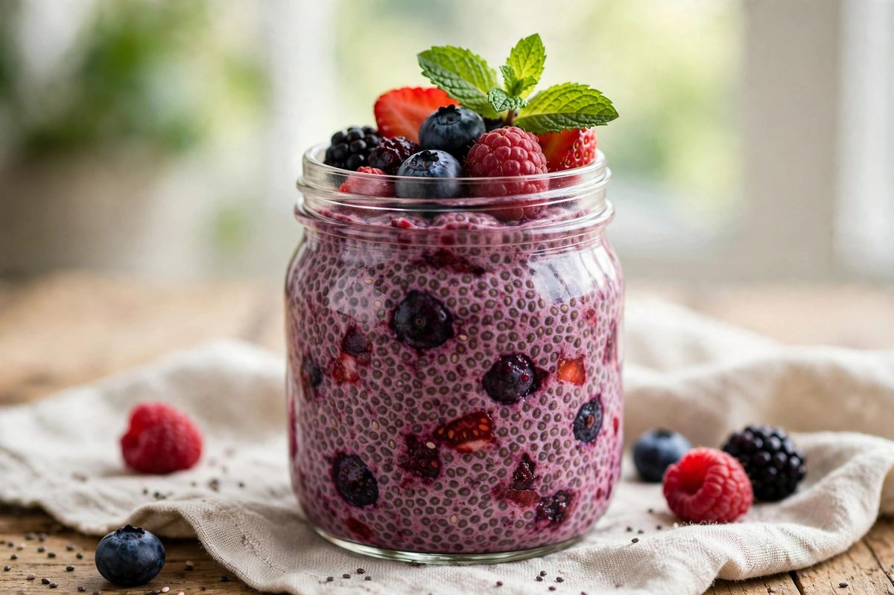

Diabetic Desserts — Sweet Treats That Work with Diabetes
Desserts for diabetes: fruit-based puddings, sugar-free options, baking swaps, and portion control.
Dessert is not forbidden
A diabetes diagnosis does not mean giving up dessert forever. Sweet foods raise blood sugar, so portions and frequency matter, but a small, well-chosen dessert can fit into a balanced diet. The goal is to enjoy dessert without a large blood sugar spike, and the way to do that is to choose desserts based on fruit, yoghurt, or nuts, to keep portions small, and to avoid desserts that are mostly sugar and refined flour. This guide gives ideas that work, and the principles behind them.
Fruit-based desserts
Fruit is the best base for a diabetic dessert, because it provides sweetness, fibre, and water. Baked apples with cinnamon and a few nuts, berries with plain yoghurt, poached pears, or a fruit salad with mint are all satisfying and relatively low in carbohydrate. A small portion of fruit with yoghurt or cream is a complete dessert that most people enjoy. Avoid fruit in syrup, which adds a lot of sugar, and keep portions moderate: a cup of berries is about 15 grams of carbohydrate, while a large banana is about 27 grams.
Sugar-free and low-sugar desserts
Sugar-free jelly, yoghurt with berries, and desserts made with sweeteners such as stevia or sucralose can satisfy a sweet tooth with little effect on blood sugar. Sugar-free does not always mean low carbohydrate, so check the label: a sugar-free cake can still contain a lot of carbohydrate from flour. Baking with almond flour or oat flour instead of white flour adds fibre and slows the blood sugar rise. A small piece of dark chocolate, about 20 grams, is a reasonable treat for many people, because it is rich and satisfying in a small amount.
Baking swaps
When baking at home, you control the sugar and the flour. Replace half the sugar with a sweetener suitable for baking, use wholemeal or almond flour for part of the white flour, and add nuts, seeds, or fruit for texture and fibre. Reduce the total sugar gradually; your taste adjusts within a few weeks, and cakes that once seemed normal begin to taste very sweet. Add spices such as cinnamon, vanilla, and cocoa, which add flavour without sugar. Bake in small portions, such as muffins, so the serving size is built in.
Portions and timing
Portion is the most important factor. A small slice of cake after a balanced meal raises blood sugar less than a large slice eaten alone, because the protein and fibre in the meal slow digestion. Share a dessert when eating out, or order a small one. Eat dessert slowly and enjoy it, rather than eating it quickly and guiltily. If you check your blood sugar, test two hours after dessert to learn how different desserts affect you, and use that knowledge to choose next time.
Desserts for occasions
Birthdays and celebrations deserve a proper dessert. Plan for it: eat a balanced meal, keep the portion small, and enjoy it without guilt. A small slice of birthday cake once in a while does not undo your overall pattern. If you are the cook, make a fruit-based dessert alongside the richer one, so there is a lighter choice. The aim is a healthy relationship with sweet food, where dessert is an occasional pleasure, not a daily habit or a forbidden fruit.
Frequently Asked Questions
Can I eat dessert with diabetes?
Yes, in small portions and not every day. Fruit-based desserts, yoghurt with berries, and small portions of dark chocolate are good choices. Portion size matters most.
Are sugar-free desserts always safe for diabetes?
No. Sugar-free products can still contain a lot of carbohydrate from flour or starch. Always check the label for total carbohydrate, not just the sugar-free claim.
What is the best dessert after a meal?
Fresh fruit with plain yoghurt or a small portion of berries with cream. The protein and fibre slow the blood sugar rise compared with cake or ice cream alone.